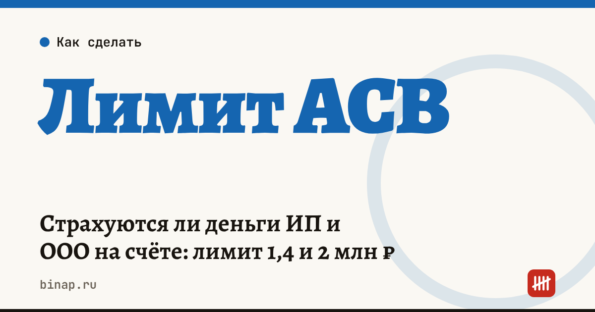

Страхуются ли деньги ИП и ООО на счёте: лимит 1,4 и 2 млн ₽

Да, деньги ИП на расчётном счёте и вкладах застрахованы, но не больше 1,4 млн ₽ в одном банке. Личные вклады предпринимателя при этом складываются с бизнес-счетами. ООО застраховано на тех же условиях, если оно есть в реестре МСП. С 1 января 2027 года вклады физлиц и ИП сроком больше трёх лет получат отдельную страховку до 2 млн ₽.
Коротко
- Лимит возмещения — 100% суммы, но не больше 1,4 млн ₽ на одного вкладчика в одном банке (ч. 2–3 ст. 11 закона № 177-ФЗ).
- У ИП в этот лимит входят и личные вклады, и деньги на счёте для бизнеса (ч. 3 ст. 11).
- ООО и другие компании застрахованы, только если они есть в едином реестре МСП. Финансовые организации исключены (ст. 5.1).
- 18.11.2026 Госдума приняла закон: рублёвые вклады физлиц и ИП сроком больше трёх лет застрахуют до 2 млн ₽ отдельно от остальных вкладов. Новые лимиты действуют с 1 января 2027 года, но закон ещё должны одобрить Совет Федерации и подписать президент.
- Лимит по счетам эскроу вырастет с 10 до 30 млн ₽.
Сроки, изменения и разборы для ИП и самозанятых — каждое утро в Telegram и MAX. Подпишитесь, чтобы не пропустить.
Что это значит
Что застраховано, а что нет. Страховка действует по закону: договор с банком или АСВ подписывать не нужно (ч. 3 ст. 5). При этом не застрахованы (ч. 2 ст. 5): - электронные деньги, в том числе остатки в электронных кошельках; - деньги по депозитным сертификатам; - деньги, переданные банку в доверительное управление; - вклады в зарубежных филиалах российских банков; - деньги на номинальных и залоговых счетах. Счета эскроу застрахованы отдельно, по своему лимиту.
ИП и ООО — разница. ИП для закона — физлицо, поэтому его личный вклад и расчётный счёт считаются вместе. ООО застраховано отдельно от владельца, но только если оно есть в реестре МСП (ст. 5.1). Если банк выдавал вкладчику кредит, то при выплате компании долг перед банком вычтут из возмещения. С физлиц, в том числе ИП, его не вычитают (ч. 10 ст. 11).
Валюта. Валютные остатки пересчитают в рубли по курсу ЦБ на день страхового случая, то есть отзыва лицензии или моратория (ч. 9 ст. 11). Остаток считают на конец этого дня (ч. 8 ст. 11).
Что меняется с 2027 года. По данным КонсультантПлюс и «Коммерсанта», закон касается физлиц, в том числе ИП, адвокатов и нотариусов. Рублёвые вклады сроком больше трёх лет застрахуют на 100%, но не больше 2 млн ₽. Возмещение по ним посчитают отдельно от обычного лимита 1,4 млн ₽. Есть условие: если забрать такой вклад досрочно, проценты по нему будут не выше, чем по вкладу до востребования. Новые лимиты применят к банкам, у которых страховой случай наступит после 1 января 2027 года. О компаниях из реестра МСП в описаниях закона не сказано, для них, судя по всему, остаётся 1,4 млн ₽.
Пример: ИП с пятью сотрудниками
ИП держит в одном банке 2,5 млн ₽ на расчётном счёте (зарплата пяти сотрудникам и налоги) и 600 тыс. ₽ на личном вкладе (расчёт редакции):
| Сейчас | С 2027 года, если 1 млн ₽ переложить на вклад больше 3 лет | |
|---|---|---|
| Всего денег в банке | 3,1 млн ₽ | 3,1 млн ₽ |
| Застраховано по общему лимиту | 1,4 млн ₽ | 1,4 млн ₽ (из 2,1 млн ₽ на счёте и обычном вкладе) |
| Застраховано по новому лимиту | — | 1 млн ₽ |
| Без страховки | 1,7 млн ₽ | 0,7 млн ₽ |
Формула (расчёт редакции): без страховки = (остатки по всем обычным счетам и вкладам в банке − 1,4 млн ₽) + (длинные вклады − 2 млн ₽, если результат больше нуля).
Но на длинный вклад нельзя класть оборотные деньги: если забрать их раньше, проценты почти пропадут. Для денег, которые нужны каждый месяц, есть другой способ — второй банк. С 1,4 млн ₽ в каждом из двух банков застраховано 2,8 млн ₽ (расчёт редакции: возмещение считают по каждому банку отдельно, ч. 7 ст. 11).
Что сделать сейчас
- Выпишите остатки по всем счетам и вкладам — бизнесовым и личным — по каждому банку.
- Если в одном банке больше 1,4 млн ₽, откройте резервный счёт во втором банке. Как сравнить тарифы, мы разбирали в статье «Где открыть счёт ИП: как сравнивать банки».
- Деньги, которые не понадобятся три года и больше, можно положить на длинный вклад, но только когда закон начнёт действовать с 2027 года. До подписания закона условия могут уточниться.
- Проверьте, что ООО есть в реестре МСП. Без этого деньги компании не застрахованы.
Проценты по вкладам ИП тоже облагаются налогом, подробнее — в статье «Проценты по вкладам у ИП на УСН». О другой страховке для предпринимателя — больничном — читайте в статье «Больничный для ИП: как застраховаться в СФР на 2027 год».
Частые вопросы
Деньги ИП на расчётном счёте и личный вклад в одном банке страхуются отдельно? Нет. Для ИП действует общий лимит 1,4 млн ₽ на все вклады в банке, включая счета для бизнеса (ч. 3 ст. 11 закона № 177-ФЗ).
Застрахованы ли деньги ООО? Да, если компания есть в едином реестре МСП и не является финансовой организацией (ст. 5.1). Лимит тот же — 1,4 млн ₽.
С какого числа действует лимит 2 млн ₽? С 1 января 2027 года, для банков, где страховой случай наступит после этой даты, и только для рублёвых вкладов сроком больше трёх лет.
- Коммерсантъ: лимит страхования длинных вкладов — 2 млн ₽ (18.11.2026)
- КонсультантПлюс: Госдума приняла закон о повышении лимитов страхования вкладов
- Клерк: новые лимиты страхования вкладов с 2027 года
- Закон № 177-ФЗ, ст. 5 — какие деньги застрахованы
- Закон № 177-ФЗ, ст. 5.1 — вклады МСП
- Закон № 177-ФЗ, ст. 11 — размер возмещения